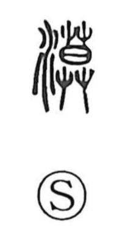

漠

Uncategorized
Kun: | On: baku
desert ・ vague ・ vast ・ wasteland
Explanation
A phono-semantic character formed with the water element and 莫 as the phonetic. 莫, which gives the on reading baku, depicts the sun sinking into grasses and is also the source of the graph 暮, “dusk.” In the Shuowen it is glossed as the northern “flowing sands,” evoking the Gobi and the image of a desolate expanse. From that scene arise the extended senses of quietness, forlornness, and boundless breadth, which underlie uses for vagueness or immense, continuing wilderness.